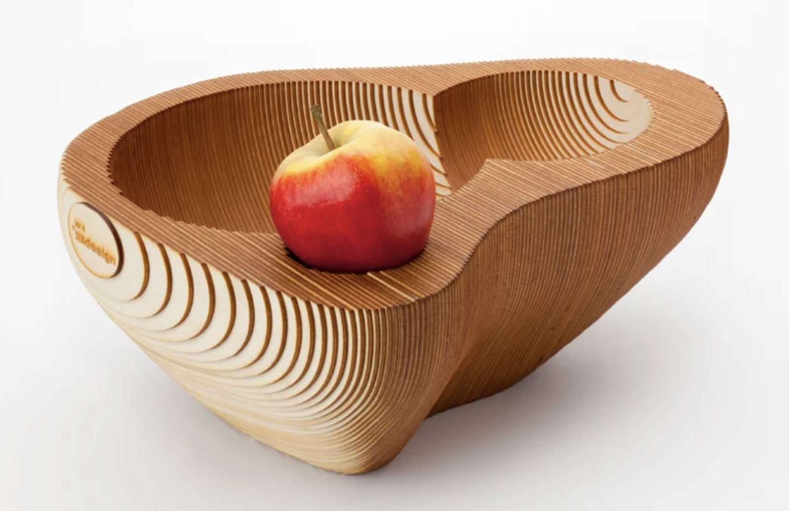
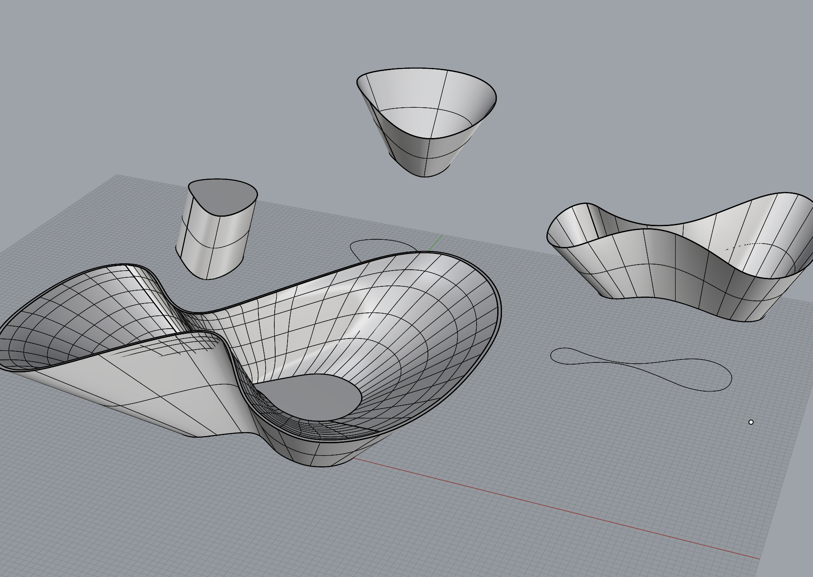
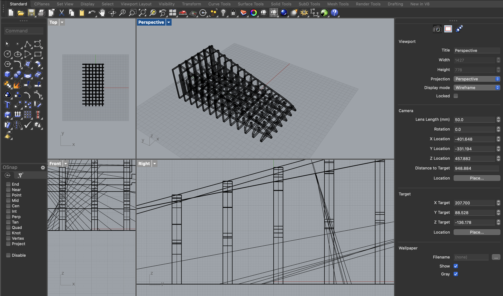

+ Lemon holder rhino model
+ Lemon holder grasshopper
+ Lemon holder print pieces in Illustrator
+ laser cutter settings: 20S 50P 50F - SUCCESS!
+ cardboard thickness = 3.6, cut thickness = 3.4
+ thanks to classmates: Tyler for the tutorials!!, Rene for the tips troubleshooting with finding grasshopper files, and Sky for helping me out with Rhino to Illustrator
+ write up of process below :)
+ Lemon holder grasshopper
+ Lemon holder print pieces in Illustrator
+ laser cutter settings: 20S 50P 50F - SUCCESS!
+ cardboard thickness = 3.6, cut thickness = 3.4
+ thanks to classmates: Tyler for the tutorials!!, Rene for the tips troubleshooting with finding grasshopper files, and Sky for helping me out with Rhino to Illustrator
+ write up of process below :)
Parametric model requirements:
1/ 30 parts to be laser cut that can be clipped together
2/ at least 1 part should enable you to connect a piece to another without use of glue or fasteners
3/ include notes in the grasshopper definition so it's clear what a user should input and bake
4/ fit should be such that the parts don't come apart with a light shaking
1/ 30 parts to be laser cut that can be clipped together
2/ at least 1 part should enable you to connect a piece to another without use of glue or fasteners
3/ include notes in the grasshopper definition so it's clear what a user should input and bake
4/ fit should be such that the parts don't come apart with a light shaking
Initial exploration
I used the following tutorials:
/ 3D puzzles with grasshopper (from 2012!)
/ 6 commands for laser cutting scale models with rhino 3D
/ extrude command - rhino basics
I initally wanted to make something practical. Like a fruitbowl that was peanut shaped (like the wood one below). But the formula for the grasshopper tutorial kept slicing my baked slats in the wrong areas. I concluded that my shape was too award for the cutting technique I was using, so I decided to make a "simpler" shape.
I then tried to make a ramp for my daughter to roll her cars on. The shape was easy to make because I had spent 10s of hours making various vases to test against the grasshopper formula, but I couldn't get it to work. But again, the formula didn't work for some reason....
Wood fruitbowl inspo
After hours of troubleshooting, I learned that the grasshopper formula:
- only worked with solid shapes
- if I wanted to make to 'shell closed polysurface', the equation only worked if the shell was >50% of the shape
/ 3D puzzles with grasshopper (from 2012!)
/ 6 commands for laser cutting scale models with rhino 3D
/ extrude command - rhino basics
I initally wanted to make something practical. Like a fruitbowl that was peanut shaped (like the wood one below). But the formula for the grasshopper tutorial kept slicing my baked slats in the wrong areas. I concluded that my shape was too award for the cutting technique I was using, so I decided to make a "simpler" shape.
I then tried to make a ramp for my daughter to roll her cars on. The shape was easy to make because I had spent 10s of hours making various vases to test against the grasshopper formula, but I couldn't get it to work. But again, the formula didn't work for some reason....



Wood fruitbowl inspo
After hours of troubleshooting, I learned that the grasshopper formula:
- only worked with solid shapes
- if I wanted to make to 'shell closed polysurface', the equation only worked if the shell was >50% of the shape
Designing
What I did:
1/ cylinder extrude (diameter around 100mm, based on the size of cardboard I had and how much I had)
(2/) (I wanted to fillet the edges, but didn't want to risk making the shape "too complciated" or else my grasshopper formula wouldnt work...)
3/ shell closed polysurface about 30% down (making sure its above 50% of the cylinder)
4/ run grasshopper equation (make sure the slicers or the 'cuts' = the thickness required for the cardboard)
5/ separate the sliced sets and 'smashed' each piece individually to get 2D pieces to print


Learnings:
- I hate Rhino x grasshopper (as a noob)
- it was an emotional journey


+ I have a lot of respect and appreciation for people who work in this space and use such complex tools
Printing
What I did:
1/ removed all the extra curves/lines that cut through the solid shape
2/ matched the artboard to my cardboard pieces
(3/ if I had time, I would have ran some test pieces)
4/ laser away! this was the easy part
5/ assemble starting with the middle cross pieces


+ I needed more time...
- I needed to consider where the slicers (or fitted cuts) would be, especially when they cut close to the edges of some of pieces. I had to just rip of some of the dangly thin strips that came out of some of my pieces
- Labeling pieces would have helped make the assembly easier.


Final